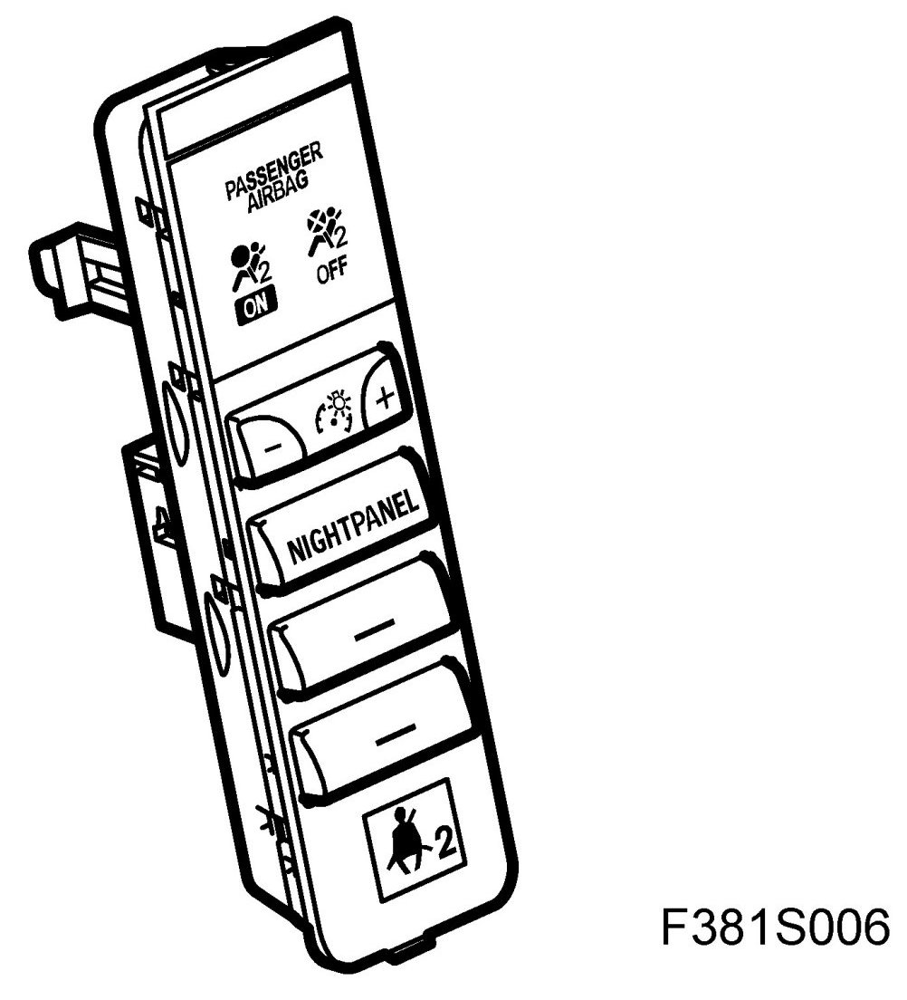
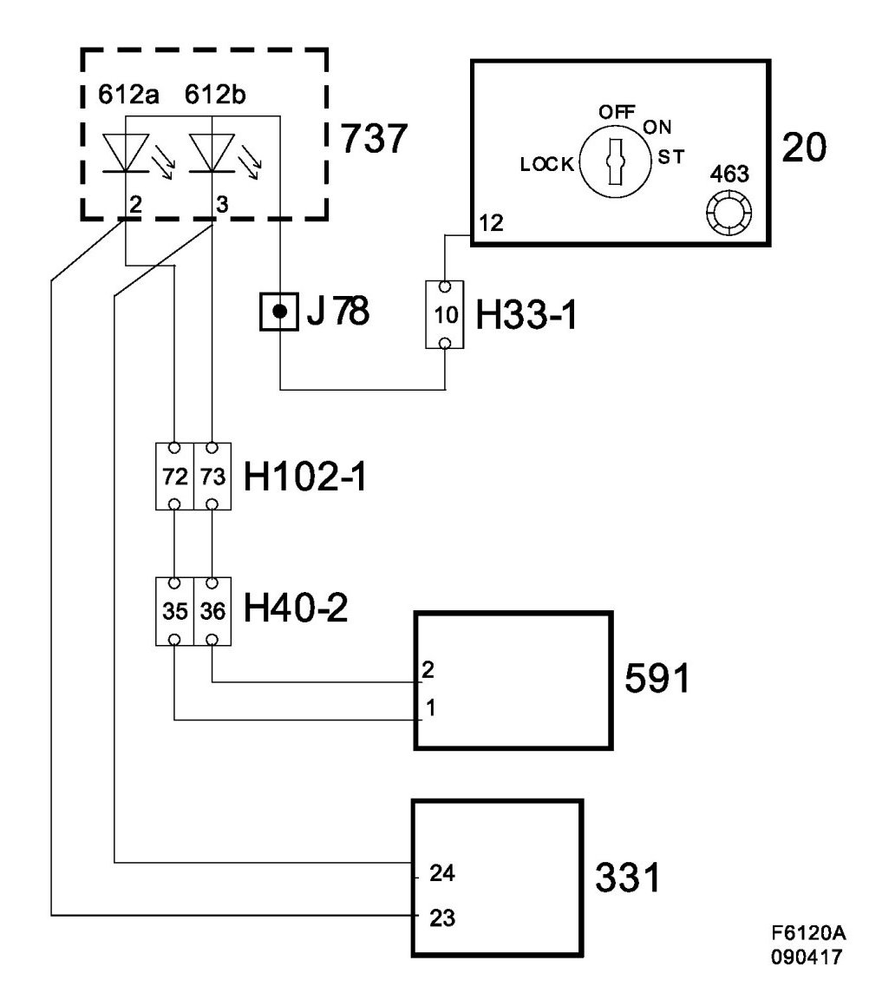
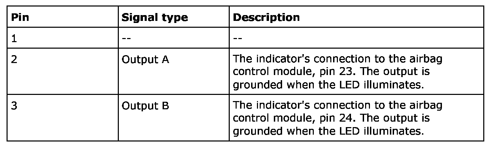

Integrated Accessory Switch Assembly: Description and Operation
Switch Panel (737A)

Location
Switch panel (737a).
Main task
Indication of passenger airbag status (on/off).
Type
Indicator with LEDs integrated in the switch panel.
Connect

